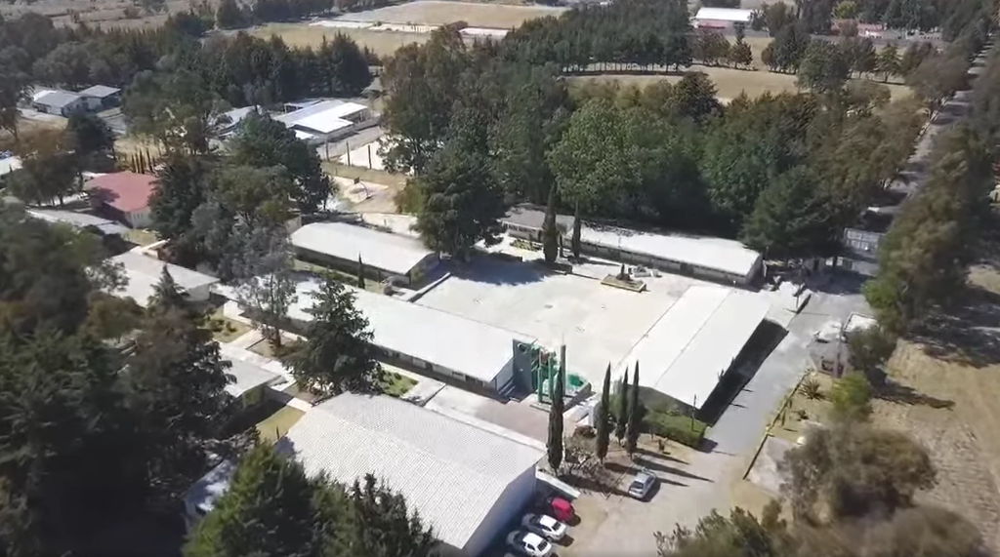
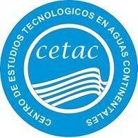
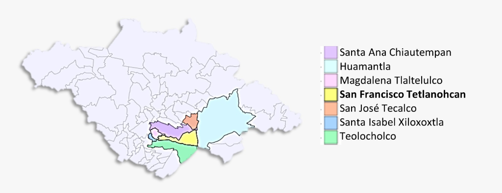

Escuelas y Extensiones
El Programa PAEC se desarrolla en el CBTa 134 y sus extensiones educativas, cada una con proyectos únicos que responden a las necesidades de su comunidad.
CBTa 134
San Francisco Tetlanohcan
Centro educativo principal donde se coordina el Programa PAEC. Aquí se desarrollan la mayoría de los proyectos ambientales y comunitarios.


Extensión Ixtenco
Desarrollando proyectos enfocados en las tradiciones locales y la conservación del entorno natural de Ixtenco.

CETAC
Centro de Estudios Tecnológicos en Aguas Continentales. Especializado en recursos hídricos y ecosistemas acuáticos.
Áreas de Impacto
Ubicación de nuestras sedes en el sureste de Tlaxcala

Mostrando: CBTa 134, CETAC y Extensión Ixtenco
(Mapa pendiente de integración)
San Francisco Tetlanohcan
Ixtenco, Tlaxcala
Ubicación por confirmar
¿Quieres participar en el programa?
Conoce el proceso para unirte al PAEC en cualquiera de nuestras sedes
Ver Proceso de Participación